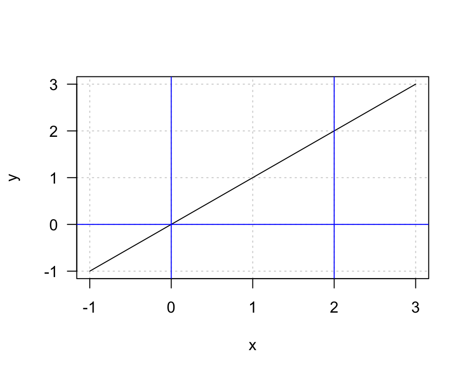

5 Integration
Aims
- to introduce the concept of integration
Learning outcomes
- to be able to explain what integration is
- to be able to explain the relationship between differentiation and integration
- to be able to integrate simple functions
- to to able to use integration to calculate the area under the curve in simple cases
5.1 Reverse to differentiation
- when a function \(f(x)\) is known we can differentiate it to obtain the derivative \(f'(x)\)
- the reverse process is to obtain \(f(x)\) from the derivative
- this process is called integration
- apart from simple reversing differentiation integration comes very useful in finding areas under curves, i.e. the area above the x-axis and below the graph of \(f(x)\), assuming that \(f(x)\) is positive
- the symbol for integration is \(\int\) and is known as “integral sign”
E.g. let’s take a function \(f(x) = x^2\). Suppose we only have a derivative, which is \(f'(x) = 2x\) and we would like to find the function given this derivative. Formally we write: \[\int 2x dx = x^2 +c\]
where:
- the term \(2x\) within the integral is called the integrand
- the term \(dx\) indicates the name of the variable involved, here \(x\)
- \(c\) is constant of integration
5.2 What is constant of integration?
- Integration reverses the process of differentiation, here, given our example function \(f(x) = x^2\) that we pretended we do not know, we started with the derivative \(f´(x) = 2x\) and via integration we obtained back the very function \[\int 2x dx = x^2\]
- However, many function can result in the very same derivative since the derivative of a constant is 0 e.g. a derivatives of \(f(x) = x^2\), \(f(x) = x^2 + 10\) and \(f(x) = x^2 + \frac{1}{2}\) all equal to \(f'(x) = 2x\)
- We have to take this into account when we are integrating, i.e. reverting differentiation. As we have no way of knowing what the original function constant is, we add it in form of \(c\), i.e. unknown constant, called the constant of integration.
5.3 Table of integrals
Similar to differentiation, in practice we can use tables of integrals to be able to find integrals in simple cases
| Function \(f(x)\) | Integral \(\int f(x) dx\) |
|---|---|
| \(constant\:k\) | \(kx + c\) |
| \(x\) | \(\frac{x^2}{2}+c\) |
| \(kx\) | \(k\frac{x^2}{2}+c\) |
| \(x^n\) | \(\frac{x^{n+1}}{n+1}+c\;\; if\;n\neq-1\) |
| \(kx^n\) | \(k\frac{x^{n+1}}{n+1}+c\) |
| \(e^x\) | \(e^x+c\) |
| \(e^{kx}\) | \(\frac{e^{kx}}{k}+c\) |
| \(\frac{1}{x}\) | \(\ln(x)+c\) |
E.g.
- \(\int 4x^3 dx = \frac{4x^{3+1}}{3+1}=x^4 + c\)
- \(\int (x^2 + x) dx = \frac{x^3}{3} + \frac{x^2}{2} +c\) (note: we can evaluate integrals separately and add them as integration as differentiation is linear)
5.4 Definite integrals
the above examples of integrals are indefinite integrals, the result of finding an indefinite integral is usually a function plus a constant of integration
we have also definite integrals, so called because the result is a definite answer, usually a number, with no constant of integration
definite integrals are often used to areas bounded by curves or, as we will cover later on, estimating probabilities
we write: \[\int_{a}^bf(x)dx\] where:
\(\int_{a}^bf(x)dx\) is called the definite integral of \(f(x)\) from \(a\) to \(b\)
the numbers \(a\) and \(b\) are known as lower and upper limits of the integral
E.g. let’s look at the function \(f(x) = x\) plotted below and calculate a definite integral from \(0\) to \(2\).

We write \[\int_{0}^2f(x)dx = \int_{0}^2 xdx = \Bigr[ \frac{1}{2}x^2\Bigr]_0^2 = \frac{1}{2}(2)^2 - \frac{1}{2}(0)^2 = 2\] so first find the integral and then we evaluate it at upper limit and subtracting the evaluation at the lower limit. Here, the result it 2. What would be the result if you tried to calculate the triangle area on the above plot, area defined by the blue vertical lines drawn at 0 and 2 and horizontal x-axis? The formula for the triangle area is \(Area = \frac{1}{2}\cdot base \cdot height\) so here \(Area = \frac{1}{2} \cdot 2 \cdot 2 = 2\) the same result as achieved with integration.
Exercises
Exercise 5.1 (Integrate) Integrate:
- \(\int 2 \cdot dx\)
- \(\int 2x\cdot dx\)
- \(\int (x^4 + x^2 + 1)\cdot dx\)
- \(\int e^x\cdot dx\)
- \(\int e^{2x}\cdot dx\)
- \(\int \frac{2}{x}\cdot dx\)
- \(\int_2^4 2x\cdot dx\)
- \(\int_0^4 (x^2+1)dx\)
Answers
Solution. Exercise 5.1
- \(\int 2 \cdot dx = 2x +c\)
- \(\int 2x\cdot dx = \frac{2x^2}{2} = x^2 + c\)
- \(\int (x^4 + x^2 + 1)\cdot dx = \frac{x^5}{5} + \frac{x^3}{3} + x + c\)
- \(\int e^x\cdot dx = e^x + c\)
- \(\int e^{2x}\cdot dx = \frac{1}{2}e^{2x}\)
- \(\int \frac{2}{x}\cdot dx =\int 2\cdot \frac{1}{x}\cdot dx = 2 \ln{x}+ c\)
- \(\int_2^4 2x\cdot dx = \Bigr[x^2\Bigr]_2^4 = 16 - 4 = 12\)
- \(\int_0^4 (x^2+1)dx = \Bigr[\frac{x^3}{3} + x \Bigr]_0^4=\frac{4^3}{3}+4 - 0 = \frac{64}{3}+4 = \frac{76}{3}\)